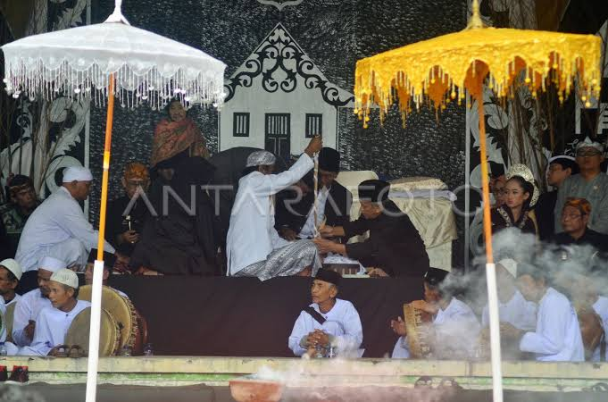

Panjalu adalah kota yang kaya akan keindahan alam dan budaya. Berikut adalah beberapa tempat wisata yang wajib dikunjungi saat berada di Panjalu:
Nyangku adalah upacara adat membersihkan benda-benda pusaka peninggalan leluhur di Panjalu, Ciamis, Jawa Barat. Upacara ini merupakan bentuk penghormatan dan syukur kepada leluhur.

Untuk informasi lebih lanjut tentang wisata di Panjalu, kunjungi situs resmi Panjalu Indonesia.